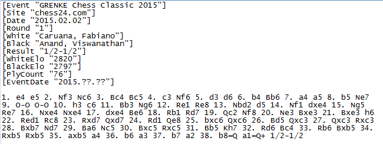

Portable Game Notation(PGN)¶
PGN is structured “for easy reading and writing by human users and for easy parsing and generation by computer programs.” The chess moves themselves are given in algebraic chess notation. The usual filename extension is .pgn.

The movetext describes the actual moves of the game. This includes move number indicators (numbers followed by either one or three periods; one if the next move is White’s move, three if the next move is Black’s move) and movetext in Standard Algebraic Notation (SAN).
For most moves the SAN consists of the letter abbreviation for the piece, an x if there is a capture, and the two-character algebraic name of the final square the piece moved to. The letter abbreviations are K (king), Q (queen), R (rook), B (bishop), and N (knight). The pawn is given an empty abbreviation in SAN movetext, but in other contexts the abbreviation P is used. The algebraic name of any square is as per usual algebraic chess notation; from white’s perspective, the leftmost square closest to white is a1, the rightmost square closest to the white is h1, and the rightmost (from white’s perspective) square closest to black side is h8.
In a few cases a more detailed representation is needed to resolve ambiguity; if so, the piece’s file letter, numerical rank, or the exact square is inserted after the moving piece’s name (in that order of preference). Thus, Nge2 specifies that the knight originally on the g-file moves to e2.
SAN kingside castling is indicated by the sequence O-O; queenside castling is indicated by the sequence O-O-O (note that these are capital Os, not zeroes, contrary to the FIDE standard for notation). Pawn promotions are notated by appending = to the destination square, followed by the piece the pawn is promoted to. For example: e8=Q.If the move is a checking move, + is also appended; if the move is a checkmating move, # is appended instead. For example: e8=Q#.
An annotator who wishes to suggest alternative moves to those actually played in the game may insert variations enclosed in parentheses. He or she may also comment on the game by inserting Numeric Annotation Glyphs (NAGs) into the movetext. Each NAG reflects a subjective impression of the move preceding the NAG or of the resultant position.
If the game result is anything other than *, the result is repeated at the end of the movetext.
Example of a pgn file
{kind=link}